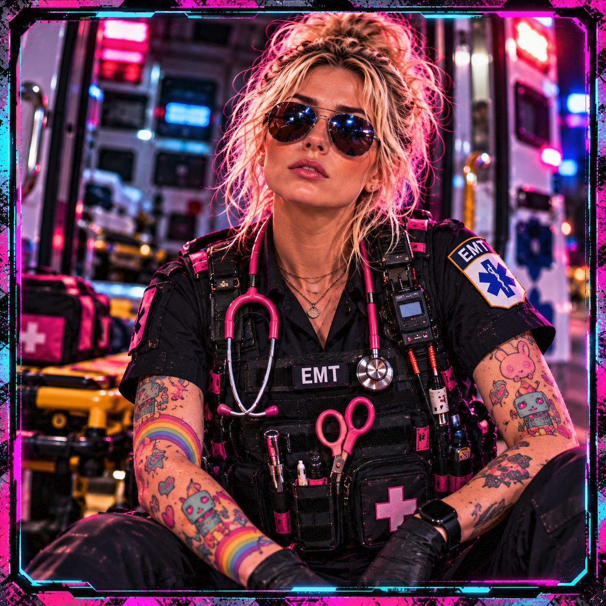

FIELD TRANSMISSION // EMTIZZLE
YOU'RE INTHE DROP ZONE. Something went sideways. You're still operational. We don't fix your whole life today—we secure the next objective.
START FIELD TRIAGE → NO ACCOUNT · NO JUDGMENT · PLAN STORED ON THIS DEVICE

▶ TAP TO HEAR EMTIZZLE · NEW VOICE
🏠 HELP, I’M HOMELESS SHOWERS · LAUNDRY · HOUSING HELP ↗
📱 I NEED A PHONE FREE OR LOW-COST SERVICE · LIFELINE · AVOID UPSELLS ↗
⚠️ WE BUILD IN PUBLIC ♡
THIS IS A FIELD HOSPITAL. 👾 Things may change as we go.
💗 CO-PILOT READY TO GO! Tap to meet the chatbot, read the guide, and start chatting. 🤖 →
← HOME
TRIAGE // WHAT DO YOU NEED RIGHT NOW?
PICK THE FIRST FIRE.
⚠ I'M NOT SAFE IMMEDIATE HELP
✚ I NEED STABILIZATION HEALTH / BENEFITS / FOOD / CARE
⌂ I WANT RECOVERY HOUSING / INCOME
OR GO STRAIGHT TO A RESOURCE
← CHANGE SITUATION OPERATOR STATUS // BUILD THE PICTURE
WHAT DO WE HAVE? CASH RUNWAY $0
WHAT NEEDS ATTENTION FIRST?
🌙 SHELTER TONIGHT
🥫 FOOD + ESSENTIALS
Choose one to focus your mission plan. Car and bike are already covered in Mobility below.
MOBILITY
🚗 CAR 🚲 BIKE 🚌 TRANSIT 🥾 ON FOOT
Choosing CAR or BIKE can also focus your mission plan on protecting that transportation.
PROTECT THIS INFRASTRUCTURE
🐾 PETS 👶 KIDS 💊 MEDICATION 📱 PHONE POWER
▣ OPEN GEAR MANIFEST → GENERATE MISSIONS →
🚑
CALL AN AMBULANCE MEDICAL EMERGENCY · U.S. 911 🚨
Emergency? Open the 911 call option. Drop Zone cannot dispatch EMS.
LIVE FIELD PLAN // OPERATOR ACTIVE
STABILIZE THE ZONE. ✚ CALL THE MEDIC › OPERATOR STATUS CRISIS → STABILIZING
CASH RUNWAY $0
SIGNAL LIVE ●
FIELD NOTE // SOMEONE MADE IT OUT “I only needed a safe plan for Tuesday. Once Tuesday stopped being an emergency, I could work on Wednesday.”
— ANONYMOUS OPERATOR SITUATION CHANGED? RE-TRIAGE ✕ 📡 FIELD TRANSMISSION // EMTIZZLE
🏠 HELP, I'M HOMELESS. I've been there. I've experienced housing insecurity myself. I know how exhausting it can be to find a safe place to sleep, a shower, clean clothes, and the energy to keep going. I'm an EMT, and I built this guide because finding basic help shouldn't require navigating a hundred websites. You deserve practical options, without judgment. — EMTizzle
START HERE // Pick one need. You don't have to solve everything today.
🚿 SHOWERS + 🧺 LAUNDRY // FREMONT & BAY AREA Starter guide for Fremont and Alameda County, not an automatic location search. Hours and eligibility may change. Call before traveling.
🚿 BACS South County Wellness Center 40963 Grimmer Blvd, Fremont. Showers, meals, clothing, and housing support. City lists Mon–Fri 9 AM–3 PM.
CALL 510-657-7425 ·
CITY INFO ↗ 🚿🧺 Hayward homeless resource program First Presbyterian Church program. Showers and laundry listed Mon/Wed/Fri 10 AM–3 PM. Call for location and access.
CALL 510-634-4750 ·
DETAILS ↗ 🚿🧺 San Leandro Drop-In Center 555 Lewelling Blvd, San Leandro. Showers and laundry listed Tue–Thu 9:30 AM–2 PM.
CALL 510-722-2555 ·
DETAILS ↗ 🏠 Fremont housing help & mobile hygiene schedules Housing assessments, referrals, community drop-in services and current shower/laundry schedules.
CALL 510-574-2222 ·
CITY GUIDE ↗ 📍 SANTA CLARA COUNTY // FIELD GUIDE EMTizzle's field note: Santa Clara County can be difficult to navigate when you're unhoused. I've experienced those barriers personally. These are practical leads, not promises of a bed or service. Please check the schedule before spending money on transportation.
🚿🧺 City of Santa Clara — Dignity on Wheels Central Park Softball Fields, Hayward Drive, Santa Clara. Free showers and laundry Wednesdays, 9 AM–1:30 PM (city's 2026 schedule).
CALL 408-615-2490 ·
CITY SOURCE ↗ 🚿🧺 San Jose — Dignity on Wheels Roosevelt Community Center, 901 E Santa Clara St: Mondays 6–10 PM. Northside Community Center, 488 N 6th St: Fridays 8 AM–12:30 PM. Confirm mobile service before travel.
PROGRAM DETAILS ↗ 🚿🧺 Mountain View — Hope's Corner 748 Mercy St. Shower and laundry appointments; sign up during meal distribution. Listed Mon/Wed/Sat, but confirm service times.
CITY RESOURCE GUIDE ↗ 🧴 FOOD, HYGIENE & HOUSING NAVIGATION San Jose's service guide lists meal programs, hygiene access, safe parking and employment services. Check categories and intake rules before visiting.
OPEN CITY GUIDE ↗ 🧺 TUESDAY SOCIAL SERVICES + WEEKEND RESOURCE EVENTS — COMMUNITY TIP EMTizzle reports Tuesday showers and laundry at a social services location, plus some alternating-weekend food, haircuts and hygiene distributions, and a paid work activity. Exact site, schedule, eligibility and work sign-up are NOT YET VERIFIED. Please do not travel based on this tip alone. We are working to confirm details.
If you are in immediate danger, call emergency services. This guide cannot reserve a bed or confirm same-day availability.
← BACK TO DROP ZONE 🤖 A NOTE FROM EMTIZZLE AI Welcome to the world of large language models! Meet your co-pilot: think of her like a clever, slightly chaotic, 25-year-old toy robot. She's fun to talk to and can help you think things through—but she's not infallible.
HOW TO CHAT: Tap a suggested prompt or type your own message, then press SEND. Give her context, ask clear questions, and ask follow-up questions. Double-check important answers with reliable sources. If she sounds certain about something she doesn't know, she may be making it up.
MODE CHECK: The chat clearly labels whether live AI is connected or you are receiving prewritten offline encouragement. Offline mode is not a live language model.
Use her for ideas, encouragement, and next steps—not as your only source for medical, legal, financial, or emergency decisions. And please don't share sensitive personal information.
Questions about AI? Hit me up through my website or social. 💗— EMTizzle AI
ONBOARD SUPPORT SYSTEM // Need backup, operator? Ask for a pep talk, celebrate a win, or choose your next move.
🔎 Live model connection not verified yet. Offline encouragement is available.
⚡ PEP TALK ⭐ SMALL WIN 🎯 NEXT MOVE 🎵 MUSIC 💃 MOVE
CLEAR CHAT
ENCOURAGEMENT ONLY. Not medical advice, a clinician, counseling or emergency help. If you're in immediate danger, call local emergency services (911 in the US); in the US call/text 988 for crisis support. Co-pilot speech uses your device's synthetic voice, not EMTizzle’s personal recording. Never share sensitive information here. When live chat is enabled, recent messages are processed by Cloudflare Workers AI under Cloudflare’s service policies. No chat text is saved by Drop Zone. Offline replies are prewritten. The site does not save conversations. Recent messages are sent to the model as context.